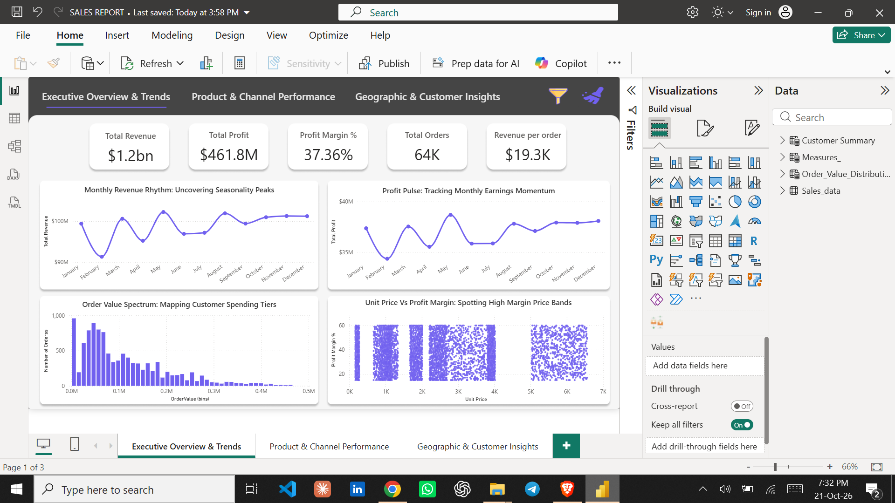
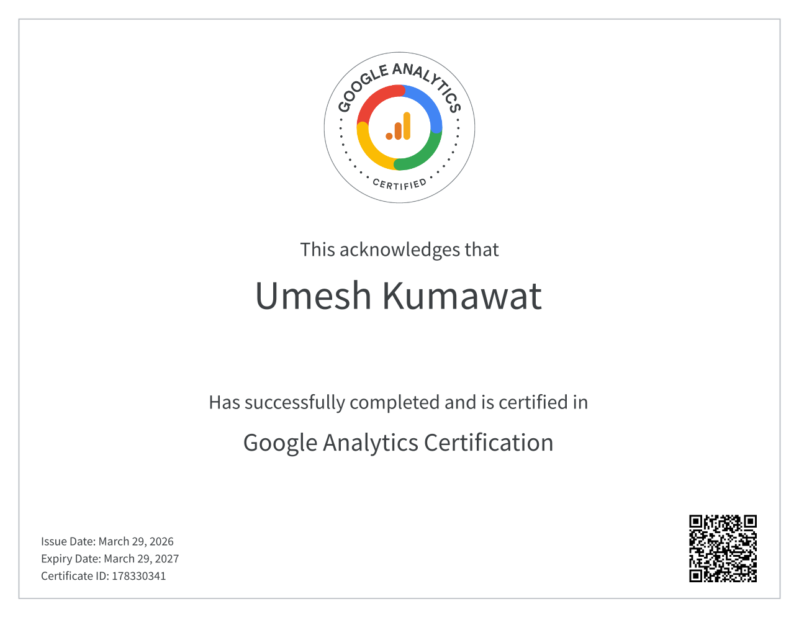
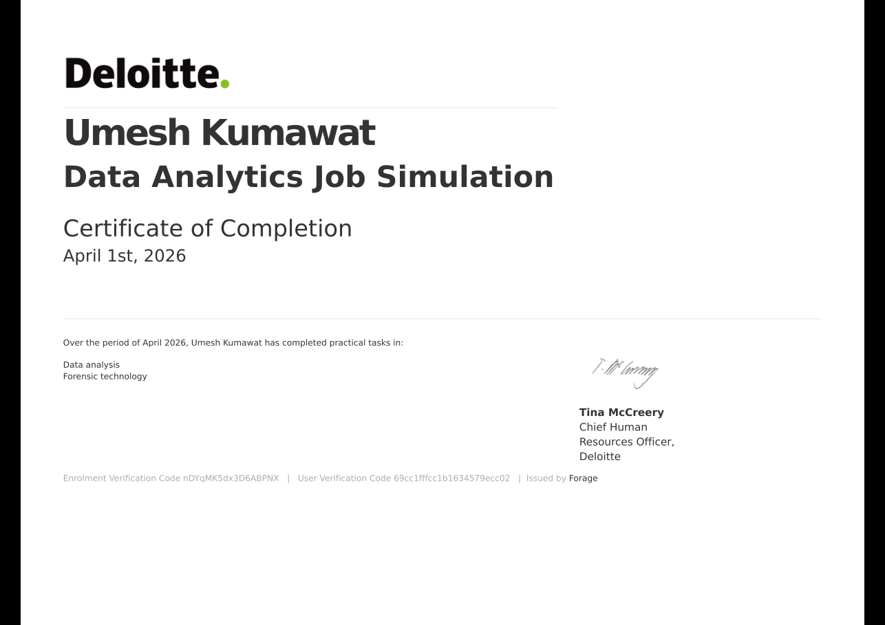
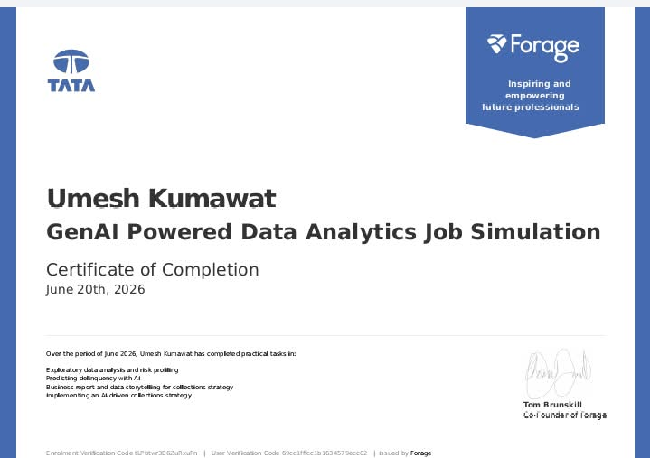

April 25, 2026
Deliver actionable insights from Acme Co.’s 2014–2018 sales data to:
Identify top-performing products, channels, and regions driving revenue and profit Uncover seasonal trends and anomalies for optimized planning Spot pricing and margin risks from outlier transactions Inform pricing, promotion, and market-expansion strategies These findings will guide the design of a Power BI dashboard to support strategic decision-making and sustainable growth.

.png)
This project analyzes customer shopping behavior using transactional data from 3,900
purchases across various product categories. The goal is to uncover insights into spending
patterns, customer segments, product preferences, and subscription behavior to guide strategic
business decisions.

An E-Commerce Sales Analysis portfolio project examines online retail data using tools like Python, SQL, and Power BI/Tableau to evaluate revenue growth, product performance, customer behavior, and regional trends. It helps businesses optimize inventory, marketing, and pricing strategies.

Completed Google Analytics (GA4) Certification, gaining skills in tracking website traffic, analyzing user behavior, measuring campaign performance, and monitoring conversions. Learned to set up properties, configure data streams, interpret reports, and apply data-driven insights to support business decisions. Strengthened practical analytics skills useful for data analysis and digital marketing roles.

Completed a Deloitte job simulation involving data analysis and forensic technology
Created a data dashboard using Tableau
Used Excel to classify data and draw business conclusions

Completed a job simulation focused on Data Analytics and Commercial Insights for the data science team.
Developed expertise in data preparation and customer analytics, utilizing transaction datasets to extract valuable insights and deliver data-driven commercial recommendations.
Extended analytical capabilities to identify benchmark stores for conducting uplift testing on trial store layouts, enabling evidence-based decision-making.

Completed a job simulation involving AI-powered data analytics and strategy development for the Financial Services team at Tata iQ.
Conducted exploratory data analysis (EDA) using GenAI tools to assess data quality, identify risk indicators, and structure insights for predictive modeling.
Proposed and justified an initial no-code predictive modeling framework to assess customer delinquency risk, leveraging GenAI for structured model logic and evaluation criteria.
Designed an AI-driven collections strategy leveraging agentic AI and automation, incorporating ethical AI principles, regulatory compliance, and scalable implementation frameworks.